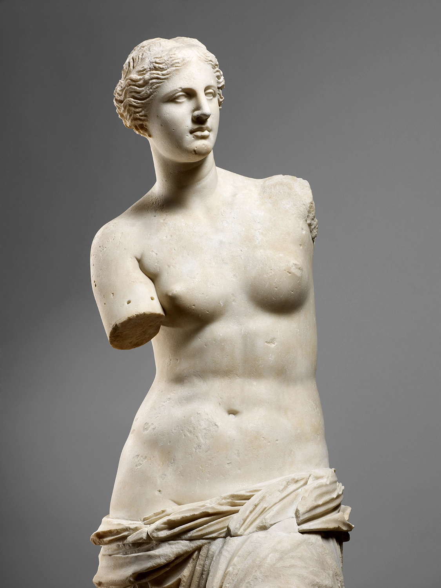
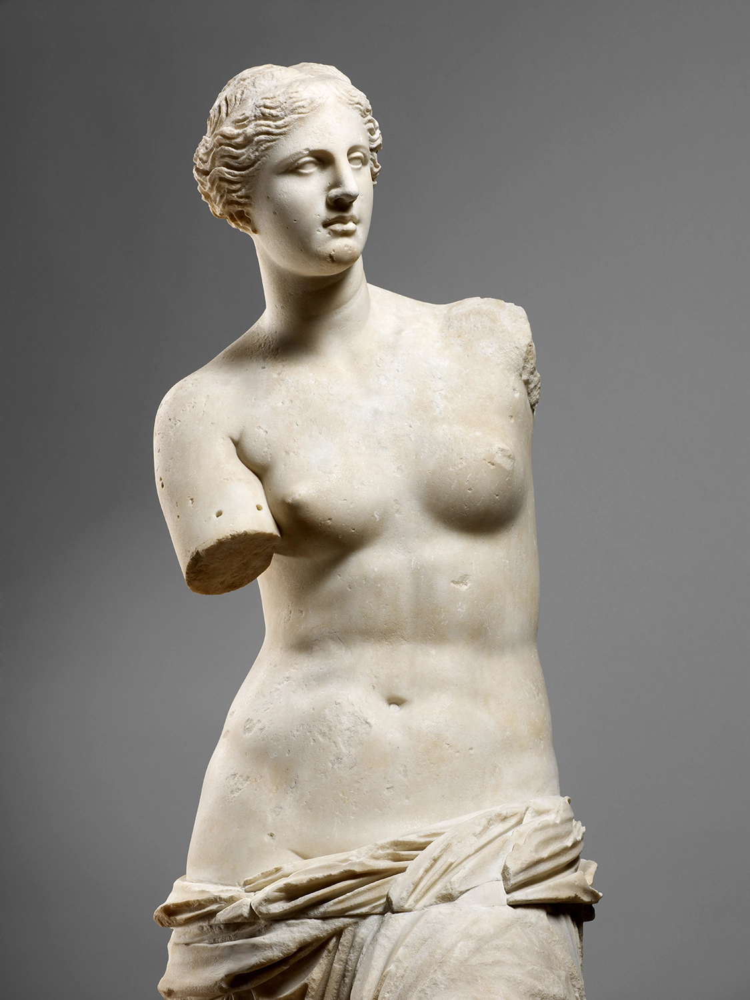

Historia
Inaugurado a finales del siglo XVIII, el Museo del Louvre es el museo más importante de Francia y uno de los más visitados del mundo. Actualmente recibe más de ocho millones de visitantes cada año.
Formado a partir de las colecciones de la monarquía francesa y las expoliaciones realizadas durante el imperio Napoleónico, el Museo del Louvre abrió sus puertas en 1793 mostrando un nuevo modelo de museo, que pasaba de las manos de las clases dirigentes al disfrute del público general.
El Museo del Louvre se encuentra alojado en el Palacio del Louvre, una fortaleza del siglo XII que fue ampliada y reformada en diversas ocasiones. Antes de que se convirtiera en museo, algunos monarcas como Carlos V y Felipe II utilizaron el palacio como residencia real en la que acumulaban sus colecciones artísticas.
Tras el traslado de la residencia real al Palacio de Versalles, el impresionante edificio de 160.000 metros cuadrados comenzaría su proceso de transformación en uno de los museos más importantes del mundo. En 1989 se construyó una pirámide de cristal rompiendo la monotonía de los grandes bloques grises del museo, que en la actualidad sirve como puerta de acceso.
Exposiciones
La colección del Louvre comprende cerca de 300.000 obras anteriores a 1948, de las que se exponen aproximadamente 35.000.
La inmensa colección está organizada de forma temática en diferentes departamentos: antigüedades orientales, antigüedades egipcias, antigüedades griegas, romanas y etruscas, historia del Louvre y el Louvre medieval, pintura, escultura, objetos de arte, artes gráficas y arte del Islam.
Entre las pinturas más importantes del museo merece la pena destacar las siguientes:
- La Gioconda de Leonardo da Vinci.
- La Libertad Guiando al Pueblo de Delacroix.
- Las Bodas de Caná de Veronés.
Entre las esculturas más sobresalientes estan:
- La Venus de Milo de la Antigua Grecia.
- El escriba sentado del Antiguo Egipto.
- La Victoria Alada de Samotracia del periodo Helenístico de la Antigua Grecia.
 

Tour Virtual
El Louvre es enorme y los amantes del arte podrían pasar varios días recorriéndolo. Para hacerse una idea general y ver las obras más destacadas, es necesario dedicar al menos una mañana completa para recorrer el museo.
Si te interesa el arte y quieres conocer a fondo las obras del Louvre, el museo pone a disposición de sus visitantes una audioguía con comentarios sobre cada tesoro de esta galería.
Además, existe la modalidad de realizar un tour virtual para conocer todas las colecciones de arte con las que cuenta este maravilloso Museo, puedes acceder a ella en este sitio.
TOUR VIRTUAL AQUÍ